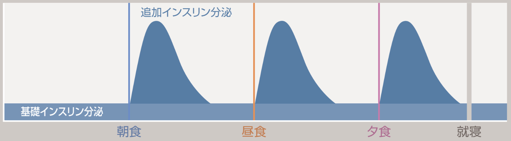
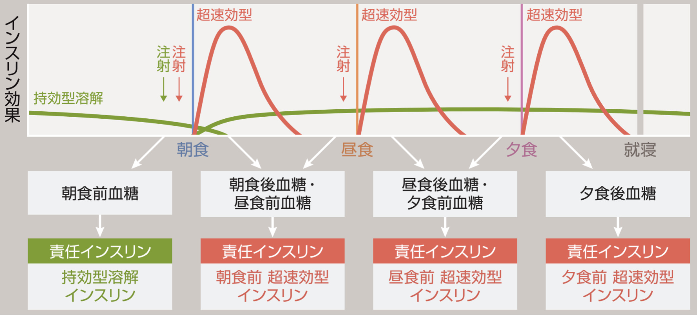
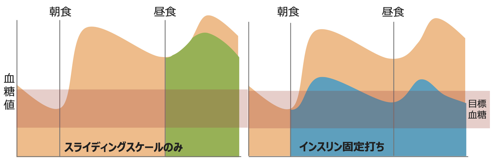

病棟でのインスリン療法の基本
健常成人では、インスリン分泌は大きく2つに分かれます。
食事に関係なく、常に少量ずつ分泌されているインスリンです。血糖値が大きく上がっていない時間帯でも、肝臓からの糖放出を抑え、空腹時血糖を安定させる役割があります。
食事などで血糖が上昇したときに、その刺激に反応して分泌されるインスリンです。食後血糖の上昇を抑える役割があります。

図1 では、青の横帯が 1日中持続している基礎インスリン分泌 を、朝食・昼食・夕食ごとに立ち上がる青い山が 食事に反応した追加インスリン分泌 を表しています。就寝時には追加分泌は基礎レベルまで落ち着きます。
このように、実際のインスリン分泌は「基礎インスリン」と「食事ごとの追加インスリン」の組み合わせで成り立っています。
病棟でのインスリン療法では、この生理的なインスリン分泌を真似するように製剤を選びます。
基礎インスリンに相当するのが、持効型インスリンです。当院では、主にグラルギンを使用しています。
追加インスリンに相当するのが、超速効型インスリンです。当院では、主にヒューマログを使用しています。

図2 の 上段 をご覧ください。緑のなだらかなライン（持効型溶解）が 1日を通して低い濃度で持続 し、基礎インスリンの役割を担います。一方、朝食・昼食・夕食のタイミングで赤いシャープなピーク（超速効型）が立ち上がり、食後の血糖上昇を抑える役割 を担います。
図2 の 下段 では、朝食前 → 朝食後・昼食前 → 昼食後・夕食前 → 夕食後 と、各タイミングで測定する血糖値に対して、どのインスリンが主に影響を与えているか（責任インスリン）を矢印で示しています。この「責任インスリン」の考え方は、セクション5 以降 で詳しく説明します。
インスリンを考えるうえで、最初に確認すべきなのは、患者が1型糖尿病か2型糖尿病かです。
1型糖尿病では、基礎インスリンの分泌もほとんどありません。そのため、インスリンが不足すると、細胞内に糖を取り込めなくなります。その結果、ケトン体が増加し、ケトアシドーシスを起こす危険があります。
したがって、1型糖尿病の患者では、たとえ食事が摂れない状況でも、基礎インスリンの投与が必要です。
2型糖尿病では、インスリン分泌自体はある程度保たれていることも多いです。主な問題は、細胞でインスリンが効きにくくなることです。これをインスリン抵抗性の上昇といいます。
詳細は省きますが、NICE-SUGAR trialなどを踏まえると、病棟での血糖値はおおむね140〜180 mg/dLを目標に考えるとよいです。もちろん、患者背景や低血糖リスクによって個別化は必要ですが、まずはこの範囲を大まかな目安として押さえておくとよいです。
次に、責任インスリンについて説明します。
責任インスリンとは、あるタイミングで測定した血糖値に対して、主に影響しているインスリンのことです。ここを理解していないと、どのインスリンを増減すればよいのかがわからなくなります。
視覚的なイメージは、前述の 図2 の下段 をご参照ください。朝食前血糖は 持効型インスリン、朝食後・昼食前血糖は 朝食前の超速効型、昼食後・夕食前血糖は 昼食前の超速効型、夕食後血糖は 夕食前の超速効型 — というように、それぞれの血糖値には主に影響しているインスリンが決まっています。
ある患者の3日分の食事区分・血糖値・ヒューマログ投与量を並べた血糖表が以下です。中央の列（2日目） に注目して血糖推移を見ていきます。
| 1日目 | 2日目 | 3日目 | |
|---|---|---|---|
| 朝食前 | 180 (ハイアラート)ヒューマログ注 ミリオペン[300単位/3mL/キット] 0単位 |
152 (ハイアラート)ヒューマログ注 ミリオペン[300単位/3mL/キット] 0単位 |
202 (ハイアラート)ヒューマログ注 ミリオペン[300単位/3mL/キット] 2単位 |
| 昼食前 | 242 (ハイアラート)ヒューマログ注 ミリオペン[300単位/3mL/キット] 2単位 |
288 (ハイアラート)ヒューマログ注 ミリオペン[300単位/3mL/キット] 4単位 |
325 (ハイアラート)ヒューマログ注 ミリオペン[300単位/3mL/キット] 4単位 |
| 夕食前 | 359 (ハイアラート)ヒューマログ注 ミリオペン[300単位/3mL/キット] 6単位 |
366 (ハイアラート)ヒューマログ注 ミリオペン[300単位/3mL/キット] 6単位 |
412 (ハイアラート)ヒューマログ注 ミリオペン[300単位/3mL/キット] 2単位 |
| 21時 | 256 (ハイアラート)ヒューマログ注 ミリオペン[300単位/3mL/キット] 4単位 |
317 (ハイアラート)ヒューマログ注 ミリオペン[300単位/3mL/キット] 6単位 |
404 |
2日目の中央列を上から順に見ていきます。朝食前 152 mg/dL はそこまで高くありません。一方で、昼食前 288 → 夕食前 366 → 就寝前(21時) 317 mg/dL と、日中を通して血糖が大きく上昇しています。
このとき、持効型インスリンを増やせば、昼食前・夕食前・就寝前の血糖は下がるかもしれません。
しかし、朝食前血糖（152 mg/dL）はすでに目標に近いため、持効型インスリンを増やすと、翌朝の朝食前に低血糖を起こす可能性があります。
そのため、このパターンでは、持効型インスリンを増量するよりも、日中の食事に対応するヒューマログを調整する方が自然です。
具体的には、
といった対応を考えます。
ここで、図3の 2日目・夕食前血糖 366 mg/dL に注目してみます。
この血糖値の責任インスリンはどれでしょうか。
ここで「夕食直前のインスリン」と考えてしまいがちですが、これはよくある間違いです。
正解は、昼食直前に投与したインスリンです。
夕食直前に測定した血糖値は、昼食後から夕食前までの血糖推移を反映しています。そのため、主に昼食直前に投与したヒューマログが、この血糖値の責任インスリンになります。
つまり、夕食前血糖を下げたい場合には、夕食前のインスリンを増やすのではなく、昼食前のヒューマログを調整することを考えます。
責任インスリンの考え方を単純化すると、以下のようになります。
| 測定した血糖 | 主な責任インスリン |
|---|---|
| 朝食前血糖 | 持効型インスリン |
| 昼食前血糖 | 朝食前の超速効型インスリン |
| 夕食前血糖 | 昼食前の超速効型インスリン |
| 就寝前血糖 | 夕食前の超速効型 |
基本的には、血糖を測定した1つ前のタイミングで投与したインスリンが、その血糖値の責任インスリンになります。
ただし、朝食前血糖については、夜間から早朝にかけて作用している持効型インスリンの影響を強く受けます。
次に、スライディングスケールについて説明します。2日目のインスリン量を見ると、以下のようになっています。
| タイミング | ヒューマログ投与量 |
|---|---|
| 朝食前 | 0単位 |
| 昼食前 | 4単位 |
| 夕食前 | 6単位 |
| 21時 | 6単位 |
これは、あらかじめ決められた固定量というより、スライディングスケールに従って投与されたものと考えられます。スライディングスケールとは、血糖を測定したタイミングで、その血糖値に応じてインスリンを投与する方法です。つまり、血糖上昇を予測して前もって打つのではなく、血糖が上がったことを確認してから、後追いでインスリンを投与する方法です。

図4 を左右で見比べると、左の スライディングスケールのみ では血糖が目標帯（ピンク）を大きく超えて上昇してからインスリンが入るのに対し、右の 固定打ち では事前投与により血糖の山が低く抑えられているのが分かります。
スライディングスケールは一見便利ですが、あくまで対症療法です。上の図4（左図）をイメージしながら読み進めてください。
例えば、朝食前血糖が目標範囲内だったとします。この場合、スライディングスケールではヒューマログは投与されません。
しかし、その後に食事を摂ると血糖は上昇します。昼食前に血糖を測定して初めて、高血糖に気づきます。そこで、その血糖値に応じてヒューマログを投与します（図4 の左図では、昼食直前にスケールに応じて投与された分が緑色で示されています）。
つまり、スライディングスケールでは、高血糖が起きてから対応するという形になります。そのため、高血糖を予防するというより、高血糖になった後に補正する治療です。
一方で、固定打ちは、食後の血糖上昇を見越して、あらかじめインスリンを投与する方法です。上の図4 の右図を見ながら読み進めてください。
朝食前血糖が目標範囲内であっても、その後に食事を摂れば血糖は上昇します。そのため、食後血糖の上昇を見越して、朝食前にヒューマログを固定量で投与します。図4 の右図では、青く塗られた領域が固定打ちで補われたインスリン効果を表しています。
その結果、昼食前の血糖上昇を抑えやすくなり、血糖値は目標血糖（ピンクの帯）の範囲内に収まりやすくなります。同様に、昼食前にもヒューマログを固定打ちすることで、昼食後から夕食前にかけての血糖上昇を抑えることができます。
このように、固定打ちは、高血糖が起きる前に予防する治療と考えるとわかりやすいです。
スライディングスケールと固定打ちの違いをまとめると、以下のようになります。
| スライディングスケール | 固定打ち | |
|---|---|---|
| 投与の考え方 | 血糖を測ってから後追いで投与 | 食後血糖上昇を見越して事前に投与 |
| 目的 | 高血糖の補正 | 高血糖の予防 |
| メリット | 導入しやすい、摂食量が読めない時に使いやすい | 血糖変動を抑えやすい |
| デメリット | 高血糖の時間が残りやすい | 食事摂取不良時に低血糖リスクがある |
スライディングスケールは便利ですが、血糖パターンが見えてきたら、スライディングスケールのみで対応し続けるのではなく、固定打ちに移行していくことが大切です。
ただし、スライディングスケールにもメリットはあります。たとえば、以下のような場面です。
このような場面では、まずスライディングスケールで対応し、血糖推移を見ながら固定打ちへ移行するのが実践的です。
固定打ちは、あらかじめインスリンを投与する方法です。そのため、何らかの理由でその後の血糖が予想ほど上がらなかった場合、インスリンが効きすぎて低血糖を起こす可能性があります。
特に注意が必要なのは、以下のような場合です。
固定打ちを行う場合は、「本当に予定通り食事が摂れるか」を確認することが重要です。
病棟でインスリン療法を考えるときは、まず1型糖尿病か2型糖尿病かを確認します。
1型糖尿病では、食事が摂れなくても基礎インスリンを中止してはいけません。
インスリン調整では、測定した血糖値に対して、どのインスリンが責任インスリンなのかを考えます。
スライディングスケールは便利ですが、高血糖が起きてから対応する対症療法です。
入院直後や摂食量が不安定な時期には、スライディングスケールから開始してもよいです。しかし、血糖パターンが見えてきたら、固定打ちに移行し、血糖上昇を予防することが大切です。
一部の図の作成には『糖尿病治療ガイド2024』日本糖尿病学会(編著)、出版社：文光堂を使用・参照しています。
本ページの回答は教育目的で作成されたものです。実際の診療判断は患者個別の状況に応じて行ってください。
回答：関谷先生 ／ 制作：ICU 関谷